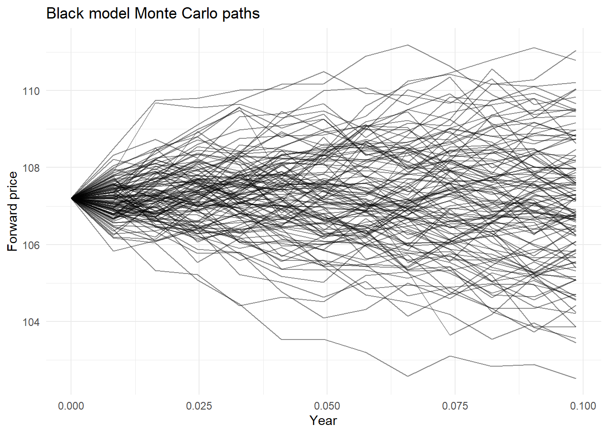
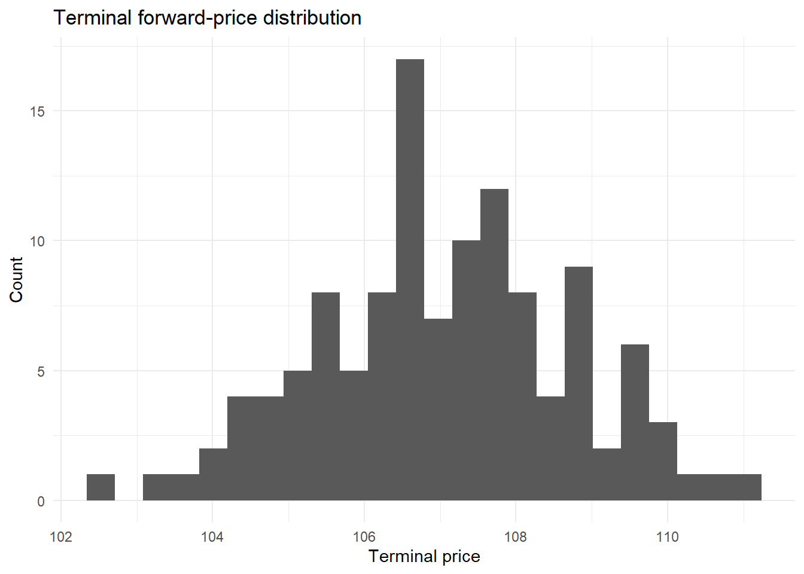
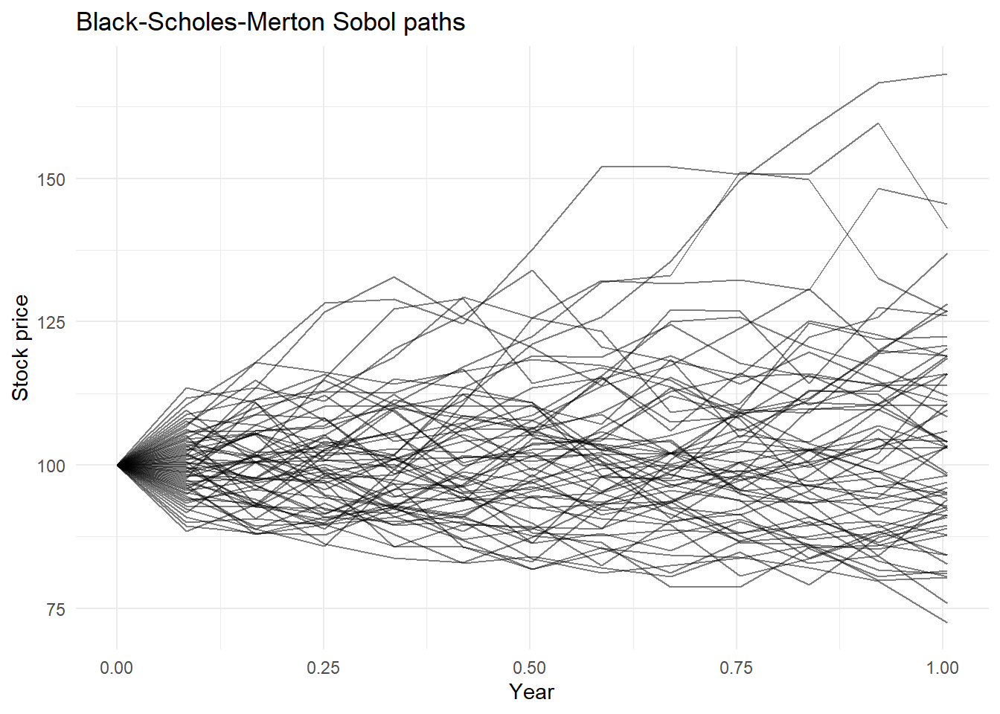

black_input_tbl <- tibble::tribble(
~input, ~value,
"trade_date", "2023-07-21",
"maturity_date", "2023-08-26",
"forward_price", as.character(107 + 6.75 / 32),
"strike_price", as.character(107.5),
"volatility", as.character(0.052),
"risk_free_rate", as.character(0.05)
)
trade_date <- GaussQuant::date_GQL("2023-07-21")
maturity_date <- GaussQuant::date_GQL("2023-08-26")
forward_price <- 107 + 6.75 / 32
strike_price <- 107.5
volatility <- 0.052
risk_free_rate <- 0.05
day_counter <- QuantLib::Actual365Fixed()
call_payoff <- QuantLib::PlainVanillaPayoff(
QuantLib::Option_Call_get(),
strike_price
)
GaussQuant::set_eval_date_GQL(trade_date)
maturity <- day_counter$yearFraction(
trade_date,
maturity_date
)
GaussQuant::show_tbl_GQH(
black_input_tbl,
"Black-76 input assumptions",
n = 20
)
#> # A tibble: 6 × 2
#> input value
#> <chr> <chr>
#> 1 trade_date 2023-07-21
#> 2 maturity_date 2023-08-26
#> 3 forward_price 107.2109375
#> 4 strike_price 107.5
#> 5 volatility 0.052
#> 6 risk_free_rate 0.05第II-4章 株価・為替と幾何ブラウン運動モデル
1973年に公表されたBlack–Scholes–Mertonモデルは、株式オプションの理論価格を求めるための基本モデルとして、金融工学の発展に大きな影響を与えた。このモデルでは、株価が幾何ブラウン運動に従い、将来の株価が対数正規分布に従うと仮定する。
一方、金利先物、債券先物、商品先物およびフォワード金利を原資産とするオプションでは、現物価格よりも満期に対応する先物価格またはフォワード価格を直接扱う方が自然である。Blackは1976年、Black–Scholes–Mertonモデルの考え方を先物オプションへ適用した。現在、この評価方法はBlack-76モデルまたは単にBlackモデルと呼ばれている。
Black–Scholes–Mertonモデルでは、現物価格、無リスク金利および配当利回りから将来のフォワード価格を求める。これに対しBlack-76モデルでは、観測されたフォワード価格または先物価格を直接入力し、満期時のPayoffを割り引いて現在価値を求める。
したがって、Black-76とBlack–Scholes–Mertonは無関係な別のモデルではない。両者は、原資産価格が正の値を取り、その変化率が正規分布に従うという共通の仮定を持つ。現物価格を出発点とするか、フォワード価格を出発点とするかが異なる。
本章では、まずBlack-76による先物・フォワードオプションの解析評価を行い、オプション価格とGreeksを確認する。次に、同じ確率過程からMonte Carloパスを生成し、満期Payoffの割引期待値が解析解へ近づくことを確認する。
その後、Black–Scholes–Mertonモデルによる株式オプション評価へ戻り、Europeanオプションの解析解と二項Treeを比較する。さらに、Americanオプションの早期行使価値を、近似解、二項TreeおよびLongstaff–Schwartz法によって評価する。
Blackモデルは、原資産価格を正の値に限定する対数正規モデルである。この性質は株式や先物価格の評価には都合がよい一方、金利がゼロまたはマイナスとなる市場では制約となる。次章では、この制約を持たないNormalモデルを取り上げ、Blackモデルとの違いを確認する。
II-4.1 ブラック–ショールズ–マートンとブラック76
II-4.1.1 ブラック–ショールズ–マートンモデル
リスク中立測度の下で、株価 \(S_t\) は次の確率微分方程式に従うと仮定する。
\[ dS_t = (r-q)S_t\,dt + \sigma S_t\,dW_t \]
ここで、\(r\) は無リスク金利、\(q\) は配当利回り、\(\sigma\) はボラティリティ、\(W_t\) はブラウン運動である。
満期 \(T\) のフォワード価格は次式となる。
\[ F_0 = S_0 e^{(r-q)T} \]
したがって、Black–Scholes–Mertonモデルは現物価格を出発点として、金利と配当を通じてフォワード価格を内生的に求めるモデルとみることができる。
II-4.1.2 ブラック76モデル
Black-76では、フォワード価格 \(F_0\) を直接入力する。European callの価格は次式で与えられる。
\[ C = D(0,T) \left[ F_0N(d_1)-KN(d_2) \right] \]
European putの価格は次式となる。
\[ P = D(0,T) \left[ KN(-d_2)-F_0N(-d_1) \right] \]
ここで、
\[ d_1 = \frac{ \log(F_0/K)+\frac{1}{2}\sigma^2T }{ \sigma\sqrt{T} } \]
\[ d_2 = d_1-\sigma\sqrt{T} \]
であり、\(K\) は行使価格、\(D(0,T)\) は満期までの割引係数、\(N(\cdot)\) は標準正規分布の累積分布関数である。
金利が決定論的である場合、同一満期の先物価格とフォワード価格は一致するため、Black-76は先物オプションとフォワードオプションの双方に用いられる。
II-4.1.3 ブラック76の入力条件
本節では、債券先物オプションを意識した価格表示を使用する。フォワード価格は107と32分の6.75、行使価格は107.5、ボラティリティは5.2%、無リスク金利は5%とする。
Black-76では、現物価格ではなく、オプション満期に対応するフォワード価格または先物価格を原資産として使用する。
II-4.2 ブラック76による解析評価
II-4.2.1 Black公式による価格とグリークス
BlackCalculatorは、フォワード価格、行使価格、総標準偏差および割引係数から、オプション価格とGreeksを直接計算する。
QuantLibへ渡される総標準偏差は、単なる年率ボラティリティではなく、
\[ \sigma\sqrt{T} \]
である。
本節では、次のGreeksを確認する。
- Delta：フォワード価格の変化に対するオプション価格の感応度
- Gamma：フォワード価格の変化に対するDeltaの感応度
- Vega：ボラティリティの変化に対するオプション価格の感応度
- Theta：時間経過に対するオプション価格の感応度
Black-76のDeltaはフォワード価格に対するDeltaであり、株式オプションのSpot Deltaとは区別する必要がある。
black_bundle <- GaussQuant::black_process_bundle_GQL(
valuation_date = trade_date,
forward = forward_price,
risk_free_rate = risk_free_rate,
volatility = volatility,
day_counter = day_counter
)
discount_factor <- black_bundle$discount_curve$discount(
maturity_date
)
black_calculator_tbl <- GaussQuant::black_calculator_table_GQL(
payoff = call_payoff,
forward = forward_price,
volatility = volatility,
maturity = maturity,
discount_factor = discount_factor
)
GaussQuant::show_tbl_GQH(
black_calculator_tbl,
"Black calculator summary",
n = 20
)
#> # A tibble: 6 × 2
#> metric value
#> <chr> <dbl>
#> 1 npv 0.56160
#> 2 delta 0.43558
#> 3 gamma 0.22397
#> 4 vega 13.203
#> 5 theta -3.4524
#> 6 theta_per_day -0.0094587II-4.2.2 Black過程によるヨーロピアン・オプション評価
前節ではBlack公式を直接使用した。本節では、同じ入力条件からBlack processを構築し、European optionへ解析的Pricing Engineを設定する。
数式を直接評価する方法と、確率過程およびPricing Engineを通じて評価する方法が、同一の理論価格を与えることを確認する。
european_call <- QuantLib::VanillaOption(
call_payoff,
QuantLib::EuropeanExercise(maturity_date)
)
analytic_engine <- QuantLib::AnalyticEuropeanEngine(
black_bundle$process
)
european_call$setPricingEngine(
analytic_engine
)
#> NULL
analytic_european_tbl <- GaussQuant::option_metric_table_GQL(
option = european_call,
process = black_bundle$process
)
analytic_npv <- analytic_european_tbl |>
dplyr::filter(.data$metric == "npv") |>
dplyr::pull(.data$value)
GaussQuant::show_tbl_GQH(
analytic_european_tbl,
"Analytic European call",
n = 20
)
#> # A tibble: 7 × 2
#> metric value
#> <chr> <dbl>
#> 1 npv 0.56160
#> 2 delta 0.43558
#> 3 gamma 0.22397
#> 4 vega 13.203
#> 5 theta -3.4524
#> 6 theta_per_day -0.0094587
#> 7 implied_volatility 0.051993II-4.3 ブラック–ショールズ–マートンとヨーロピアン・オプション
II-4.3.1 ブラック–ショールズ–マートンモデルの入力条件
ここからは現物株価を原資産とするBlack–Scholes–Mertonモデルを扱う。現物価格100、行使価格100、満期1年、ボラティリティ20%、無リスク金利5%、配当利回り0%とする。
Black–Scholes–Merton processでは、現物価格に加えて、無リスク金利カーブ、配当利回りカーブおよびボラティリティカーブを設定する。
bsm_input_tbl <- tibble::tribble(
~input, ~value,
"trade_date", "2024-03-01",
"maturity", "1Y",
"spot_price", as.character(100),
"strike_price", as.character(100),
"volatility", as.character(0.20),
"risk_free_rate", as.character(0.05),
"dividend_rate", as.character(0)
)
trade_date_bsm <- GaussQuant::date_GQL("2024-03-01")
calendar_bsm <- QuantLib::TARGET()
maturity_date_bsm <- calendar_bsm$advance(
trade_date_bsm,
1L,
"Years"
)
spot_price_bsm <- 100
strike_price_bsm <- 100
volatility_bsm <- 0.20
risk_free_rate_bsm <- 0.05
dividend_rate_bsm <- 0
GaussQuant::set_eval_date_GQL(
trade_date_bsm
)
bsm_bundle <- GaussQuant::bsm_process_bundle_GQL(
valuation_date = trade_date_bsm,
spot = spot_price_bsm,
risk_free_rate = risk_free_rate_bsm,
dividend_rate = dividend_rate_bsm,
volatility = volatility_bsm,
day_counter = day_counter,
calendar = calendar_bsm
)
GaussQuant::show_tbl_GQH(
bsm_input_tbl,
"Black-Scholes-Merton assumptions",
n = 20
)
#> # A tibble: 7 × 2
#> input value
#> <chr> <chr>
#> 1 trade_date 2024-03-01
#> 2 maturity 1Y
#> 3 spot_price 100
#> 4 strike_price 100
#> 5 volatility 0.2
#> 6 risk_free_rate 0.05
#> 7 dividend_rate 0II-4.3.2 ヨーロピアン putの解析解と二項ツリー
Europeanオプションは満期時にのみ行使できるため、Black–Scholes–Mertonモデルの解析解を利用できる。
二項Treeでは、連続時間の価格過程を有限個の時間ステップへ分割する。ステップ数を増やすほど、理論上は連続時間モデルの解析値へ近づく。
ここでは、25、100および500ステップのCox–Ross–Rubinstein Treeを解析解と比較する。
european_put <- GaussQuant::make_european_option_GQL(
spot = spot_price_bsm,
strike = strike_price_bsm,
maturity_date = maturity_date_bsm,
option_type = "put",
valuation_date = trade_date_bsm,
risk_free_rate = risk_free_rate_bsm,
dividend_yield = dividend_rate_bsm,
volatility = volatility_bsm,
day_counter = day_counter,
calendar = calendar_bsm
)
european_engines <- list(
crr_25 = QuantLib::BinomialCRRVanillaEngine(
bsm_bundle$process,
25L
),
analytic = QuantLib::AnalyticEuropeanEngine(
bsm_bundle$process
),
crr_100 = QuantLib::BinomialCRRVanillaEngine(
bsm_bundle$process,
100L
),
crr_500 = QuantLib::BinomialCRRVanillaEngine(
bsm_bundle$process,
500L
)
)
european_comparison_tbl <- purrr::imap_dfr(
european_engines,
function(engine, method) {
european_put$setPricingEngine(engine)
tibble::tibble(
method = method,
npv = european_put$NPV()
)
}
)
analytic_put_npv <- european_comparison_tbl |>
dplyr::filter(.data$method == "analytic") |>
dplyr::pull(.data$npv)
european_comparison_tbl <- european_comparison_tbl |>
dplyr::mutate(
difference_from_analytic = .data$npv - analytic_put_npv
)
GaussQuant::show_tbl_GQH(
european_comparison_tbl,
"European put engine comparison",
n = 20
)
#> # A tibble: 4 × 3
#> method npv difference_from_analytic
#> <chr> <dbl> <dbl>
#> 1 crr_25 5.6546 0.071974
#> 2 analytic 5.5826 0
#> 3 crr_100 5.5629 -0.019666
#> 4 crr_500 5.5786 -0.0039372II-4.4 モンテカルロ評価
II-4.4.1 擬似乱数モンテカルロ評価
リスク中立評価では、オプション価格は満期Payoffの割引期待値として表される。
\[ V_0 = D(0,T) E^Q \left[ \max(F_T-K,0) \right] \]
Monte Carlo法では、多数の将来パスを生成し、各パスの満期Payoffを求め、その平均値を割り引く。
European callには解析解があるため、ここでMonte Carlo法を使う目的は、解析解に代わる高度な方法を示すことではない。確率過程から生成したパスの期待値がBlack公式の価格へ近づくことを確認し、後に解析解を持たない商品へ応用する準備をすることにある。
mc_setting_tbl <- tibble::tribble(
~setting, ~value,
"steps", 12,
"paths", 20000,
"seed", 1
)
mc_path_tbl <- GaussQuant::generate_path_table_GQL(
process = black_bundle$process,
maturity = maturity,
n_steps = 12L,
n_paths = 200L,
seed = 1L,
sequence = "pseudo"
)
mc_result <- GaussQuant::terminal_option_mc_GQL(
path_tbl = mc_path_tbl,
strike = strike_price,
discount_factor = discount_factor,
option_type = "call"
)
mc_comparison_tbl <- tibble::tribble(
~method, ~npv, ~standard_error,
"Black analytic", analytic_npv, NA_real_,
"Pseudo-random Monte Carlo", mc_result$summary$npv[[1]], mc_result$summary$standard_error[[1]]
) |>
dplyr::mutate(
difference_from_analytic = .data$npv - analytic_npv
)
GaussQuant::show_tbl_GQH(
mc_setting_tbl,
"Monte Carlo settings",
n = 20
)
#> # A tibble: 3 × 2
#> setting value
#> <chr> <dbl>
#> 1 steps 12
#> 2 paths 20000
#> 3 seed 1
GaussQuant::show_tbl_GQH(
mc_comparison_tbl,
"Analytic and Monte Carlo comparison",
n = 20
)
#> # A tibble: 2 × 4
#> method npv standard_error difference_from_analytic
#> <chr> <dbl> <dbl> <dbl>
#> 1 Black analytic 0.56160 NA 0
#> 2 Pseudo-random Monte Carlo 0.47698 0.059721 -0.084615標準誤差は、有限本数のパスを用いたことによるMonte Carlo推定値の不確実性を表す。解析値との差が標準誤差と同程度であれば、シミュレーション結果は統計的に整合的と判断できる。
II-4.4.2 モンテカルロパスの可視化
Black processでは、フォワード価格は対数正規分布に従う。したがって、各パスの価格は常に正であり、満期価格の分布は左右対称にはならない。
次のグラフでは、前節と同じオプション満期までの120本のパスと、その満期価格分布を表示する。
path_plot_tbl <- GaussQuant::generate_path_table_GQL(
process = black_bundle$process,
maturity = maturity,
n_steps = 12L,
n_paths = 120L,
seed = 1L,
sequence = "pseudo"
)
path_plot <- ggplot2::ggplot(
path_plot_tbl,
ggplot2::aes(
x = .data$time,
y = .data$price,
group = .data$path_id
)
) +
ggplot2::geom_line(
alpha = 0.45,
linewidth = 0.4
) +
ggplot2::labs(
title = "Black model Monte Carlo paths",
x = "Year",
y = "Forward price"
)
terminal_plot_tbl <- path_plot_tbl |>
dplyr::group_by(.data$path_id) |>
dplyr::slice_max(
order_by = .data$step,
n = 1L,
with_ties = FALSE
) |>
dplyr::ungroup()
terminal_plot <- ggplot2::ggplot(
terminal_plot_tbl,
ggplot2::aes(x = .data$price)
) +
ggplot2::geom_histogram(
bins = 24
) +
ggplot2::labs(
title = "Terminal forward-price distribution",
x = "Terminal price",
y = "Count"
)
show_plot_LFL(path_plot)
show_plot_LFL(terminal_plot)
II-4.4.3 Black過程の1パス
Black processのフォワード価格は、時間幅 \(\Delta t\) ごとに次式で更新できる。
\[ F_{t+\Delta t} = F_t \exp \left[ -\frac{1}{2}\sigma^2\Delta t + \sigma\sqrt{\Delta t}Z \right] \]
ここで、\(Z\) は標準正規乱数である。フォワード測度の下ではフォワード価格のドリフトがゼロであるため、指数部にはIto補正項である \(-\frac{1}{2}\sigma^2\Delta t\) が現れる。
QuantLibのPathGeneratorが使用するGaussian incrementを取り出し、同じ乱数から手計算したパスと比較する。
n_steps_check <- 3L
seed_check <- 1L
generated_path_tbl <- GaussQuant::generate_path_table_GQL(
process = black_bundle$process,
maturity = maturity,
n_steps = n_steps_check,
n_paths = 1L,
seed = seed_check,
sequence = "pseudo"
)
gaussian_rng_check <- QuantLib::GaussianRandomSequenceGenerator(
QuantLib::UniformRandomSequenceGenerator(
n_steps_check,
QuantLib::UniformRandomGenerator(seed_check)
)
)
gaussian_increment <- gaussian_rng_check$nextSequence()$value() |>
as.numeric()
time_grid_check <- generated_path_tbl |>
dplyr::arrange(.data$step) |>
dplyr::pull(.data$time)
dt_check <- diff(time_grid_check)
growth_factor <- exp(
-0.5 * volatility^2 * dt_check +
volatility * sqrt(dt_check) * gaussian_increment
)
hand_price <- forward_price * c(
1,
cumprod(growth_factor)
)
one_path_check_tbl <- generated_path_tbl |>
dplyr::arrange(.data$step) |>
dplyr::transmute(
step = .data$step,
time = .data$time,
generated_price = .data$price,
hand_price = hand_price,
difference = .data$price - hand_price
)
GaussQuant::show_tbl_GQH(
one_path_check_tbl,
"One-path hand calculation",
n = 20
)
#> # A tibble: 4 × 5
#> step time generated_price hand_price difference
#> <int> <dbl> <dbl> <dbl> <dbl>
#> 1 0 0 107.21 107.21 0
#> 2 1 0.032877 106.99 106.99 0
#> 3 2 0.065753 109.82 109.82 0
#> 4 3 0.098630 110.42 110.42 -1.4211e-14差が数値誤差の範囲に収まれば、PathGeneratorがBlack過程の離散化式に従っていることを確認できる。
II-4.5 アメリカン putの早期行使価値
Americanオプションは満期までの任意の時点で行使できる。したがって、その価値は同じ条件のEuropeanオプション以上となる。
\[ V_{\mathrm{American}} \geq V_{\mathrm{European}} \]
両者の差は早期行使権の価値である。
American putには一般的な閉形式の解析解がないため、二項Treeまたは近似法を用いる。本節では、次の方法を比較する。
- 25ステップCRR Tree
- Barone–Adesi–Whaley近似
- Bjerksund–Stensland近似
- 500ステップCRR Tree
500ステップCRR Treeを比較基準とする。
american_put <- GaussQuant::make_american_option_GQL(
spot = spot_price_bsm,
strike = strike_price_bsm,
maturity_date = maturity_date_bsm,
option_type = "put",
valuation_date = trade_date_bsm,
risk_free_rate = risk_free_rate_bsm,
dividend_yield = dividend_rate_bsm,
volatility = volatility_bsm,
day_counter = day_counter,
calendar = calendar_bsm,
steps = 500L
)
american_engines <- list(
crr_25 = QuantLib::BinomialCRRVanillaEngine(
bsm_bundle$process,
25L
),
barone_adesi_whaley = QuantLib::BaroneAdesiWhaleyApproximationEngine(
bsm_bundle$process
),
bjerksund_stensland = QuantLib::BjerksundStenslandApproximationEngine(
bsm_bundle$process
),
crr_500 = QuantLib::BinomialCRRVanillaEngine(
bsm_bundle$process,
500L
)
)
american_comparison_tbl <- purrr::imap_dfr(
american_engines,
function(engine, method) {
american_put$setPricingEngine(engine)
tibble::tibble(
method = method,
npv = american_put$NPV()
)
}
)
crr_500_american_npv <- american_comparison_tbl |>
dplyr::filter(.data$method == "crr_500") |>
dplyr::pull(.data$npv)
american_comparison_tbl <- american_comparison_tbl |>
dplyr::mutate(
difference_from_crr_500 = .data$npv - crr_500_american_npv
)
GaussQuant::show_tbl_GQH(
american_comparison_tbl,
"American put engine comparison",
n = 20
)
#> # A tibble: 4 × 3
#> method npv difference_from_crr_500
#> <chr> <dbl> <dbl>
#> 1 crr_25 6.1595 0.058390
#> 2 barone_adesi_whaley 6.1100 0.0089221
#> 3 bjerksund_stensland 5.9951 -0.10604
#> 4 crr_500 6.1011 0II-4.6 準モンテカルロとロングスタッフ–シュワルツ法
II-4.6.1 Sobol系列によるパス生成
擬似乱数は乱数生成器によって確率的な点列を作る。これに対しSobol系列は、積分領域をできるだけ均等に覆うように構成された低乖離列である。
Sobol系列を用いる準Monte Carlo法では、通常の擬似乱数より少ないパスで安定した数値積分が得られる場合がある。ただし、パス同士は独立な確率標本ではないため、通常の標準誤差の解釈をそのまま適用できない点に注意する。
次のコードでは、Black–Scholes–Merton processから64本のSobolパスを生成する。
maturity_bsm <- day_counter$yearFraction(
trade_date_bsm,
maturity_date_bsm
)
sobol_display_tbl <- GaussQuant::generate_path_table_GQL(
process = bsm_bundle$process,
maturity = maturity_bsm,
n_steps = 12L,
n_paths = 64L,
seed = 1L,
sequence = "sobol"
)
sobol_plot <- ggplot2::ggplot(
sobol_display_tbl,
ggplot2::aes(
x = .data$time,
y = .data$price,
group = .data$path_id
)
) +
ggplot2::geom_line(
alpha = 0.5,
linewidth = 0.4
) +
ggplot2::labs(
title = "Black-Scholes-Merton Sobol paths",
x = "Year",
y = "Stock price"
)
GaussQuant::show_tbl_GQH(
sobol_display_tbl,
"Sobol path table",
n = 20
)
#> # A tibble: 20 × 4
#> path_id step time price
#> <int> <int> <dbl> <dbl>
#> 1 1 0 0 100
#> 2 1 1 0.083790 100.25
#> 3 1 2 0.16758 100.50
#> 4 1 3 0.25137 100.76
#> 5 1 4 0.33516 101.01
#> 6 1 5 0.41895 101.26
#> 7 1 6 0.50274 101.52
#> 8 1 7 0.58653 101.78
#> 9 1 8 0.67032 102.03
#> 10 1 9 0.75411 102.29
#> 11 1 10 0.83790 102.55
#> 12 1 11 0.92169 102.80
#> 13 1 12 1.0055 103.06
#> 14 2 0 0 100
#> 15 2 1 0.083790 104.24
#> 16 2 2 0.16758 100.50
#> 17 2 3 0.25137 104.77
#> 18 2 4 0.33516 101.01
#> 19 2 5 0.41895 105.30
#> 20 2 6 0.50274 101.52
show_plot_LFL(sobol_plot)
II-4.6.2 ロングスタッフ–シュワルツ法
Americanオプションでは、各行使可能時点において、即時行使価値と保有を継続する価値を比較する必要がある。
putの即時行使価値は次式である。
\[ I(S_t) = \max(K-S_t,0) \]
Longstaff–Schwartz法では、将来受け取る割引Cashflowを原資産価格の関数として回帰し、条件付き継続価値を推定する。本章では、次の2次多項式を使用する。
\[ \widehat{C}(S_t) = \beta_0 + \beta_1S_t + \beta_2S_t^2 \]
即時行使価値が推定継続価値を上回る場合、その時点で行使する。
本節では、2,048本のSobolパスからAmerican putを評価し、500ステップCRR Treeと比較する。
lsm_path_tbl <- GaussQuant::generate_path_table_GQL(
process = bsm_bundle$process,
maturity = maturity_bsm,
n_steps = 12L,
n_paths = 2048L,
seed = 1L,
sequence = "sobol"
)
lsm_result <- GaussQuant::lsm_american_put_GQL(
path_tbl = lsm_path_tbl,
strike = strike_price_bsm,
risk_free_rate = risk_free_rate_bsm
)
lsm_npv <- lsm_result$summary |>
dplyr::filter(.data$metric == "lsm_npv") |>
dplyr::pull(.data$value)
lsm_comparison_tbl <- tibble::tribble(
~method, ~npv,
"Longstaff-Schwartz Sobol", lsm_npv,
"CRR Tree 500 steps", crr_500_american_npv
) |>
dplyr::mutate(
difference_from_crr_500 = .data$npv - crr_500_american_npv
)
exercise_summary_tbl <- lsm_result$exercise |>
dplyr::count(
.data$exercise_step,
.data$exercise_time,
name = "paths"
) |>
dplyr::arrange(.data$exercise_step)
GaussQuant::show_tbl_GQH(
lsm_result$summary,
"Longstaff-Schwartz summary",
n = 20
)
#> # A tibble: 4 × 2
#> metric value
#> <chr> <dbl>
#> 1 lsm_npv 6.2925
#> 2 standard_error 0.16653
#> 3 paths 2048
#> 4 steps 12
GaussQuant::show_tbl_GQH(
lsm_comparison_tbl,
"Longstaff-Schwartz and CRR comparison",
n = 20
)
#> # A tibble: 2 × 3
#> method npv difference_from_crr_500
#> <chr> <dbl> <dbl>
#> 1 Longstaff-Schwartz Sobol 6.2925 0.19139
#> 2 CRR Tree 500 steps 6.1011 0
GaussQuant::show_tbl_GQH(
exercise_summary_tbl,
"Longstaff-Schwartz exercise timing",
n = 20
)
#> # A tibble: 11 × 3
#> exercise_step exercise_time paths
#> <int> <dbl> <int>
#> 1 2 0.16758 28
#> 2 3 0.25137 52
#> 3 4 0.33516 57
#> 4 5 0.41895 109
#> 5 6 0.50274 107
#> 6 7 0.58653 100
#> 7 8 0.67032 87
#> 8 9 0.75411 38
#> 9 10 0.83790 78
#> 10 11 0.92169 96
#> 11 12 1.0055 1296
GaussQuant::show_tbl_GQH(
lsm_result$diagnostics,
"Longstaff-Schwartz diagnostics",
n = 20
)
#> # A tibble: 11 × 6
#> step time in_the_money_paths exercised_paths mean_immediate_value
#> <int> <dbl> <int> <int> <dbl>
#> 1 11 0.92169 931 575 5.6825
#> 2 10 0.83790 918 459 5.5258
#> 3 9 0.75411 932 355 5.2815
#> 4 8 0.67032 937 392 5.0842
#> 5 7 0.58653 945 338 4.8180
#> 6 6 0.50274 946 282 4.5454
#> 7 5 0.41895 939 193 4.2509
#> 8 4 0.33516 959 105 3.8461
#> 9 3 0.25137 970 69 3.4077
#> 10 2 0.16758 963 28 2.8755
#> 11 1 0.083790 989 0 2.1136
#> # ℹ 1 more variable: mean_realized_continuation <dbl>Longstaff–Schwartz法の価格は、パス数、時間ステップ、基底関数および回帰誤差に依存する。したがって、二項Treeとの差が完全にゼロになることを目的とするのではなく、早期行使判断をMonte Carloパス上でどのように近似するかを確認する。
II-4.7 まとめ
Black-76とBlack–Scholes–Mertonは、原資産が対数正規分布に従うという共通の仮定を持つ。Black–Scholes–Mertonは現物価格から出発し、Black-76はフォワード価格または先物価格を直接入力する。
Black-76では、Black公式による直接計算と、Black processを用いた解析的Pricing Engineが同じ価格を与えることを確認した。さらに、Monte Carlo法によって満期Payoffの割引期待値を求め、解析値と比較した。
Black–Scholes–Mertonモデルでは、European putの解析解とCRR Treeを比較した。American putでは、早期行使権を評価するため、近似Engine、CRR TreeおよびLongstaff–Schwartz法を比較した。
解析解、Tree、Monte Carloおよび回帰法は、互いに競合する単純な代替手法ではない。Payoffの構造、早期行使の有無、モデルの次元および必要な計算精度に応じて使い分ける必要がある。
Blackモデルの対数正規仮定は、価格が正である市場では扱いやすい。一方、金利がゼロまたはマイナスとなる場合には直接適用できない。この問題が、NormalモデルやShifted Blackモデルを用いる理由となる。
chapter04_summary_tbl <- tibble::tribble(
~section, ~main_result,
"Black-76", "Black calculator and analytic European pricing",
"Pseudo-random Monte Carlo", "Discounted terminal payoff and standard error",
"European put", "Analytic and CRR Tree comparison",
"American put", "Approximation engines and CRR Tree comparison",
"Sobol", "Low-discrepancy path generation",
"Longstaff-Schwartz", "Regression-based early-exercise approximation"
)
GaussQuant::show_tbl_GQH(
chapter04_summary_tbl,
"Chapter II-4 summary",
n = 20
)
#> # A tibble: 6 × 2
#> section main_result
#> <chr> <chr>
#> 1 Black-76 Black calculator and analytic European pricing
#> 2 Pseudo-random Monte Carlo Discounted terminal payoff and standard error
#> 3 European put Analytic and CRR Tree comparison
#> 4 American put Approximation engines and CRR Tree comparison
#> 5 Sobol Low-discrepancy path generation
#> 6 Longstaff-Schwartz Regression-based early-exercise approximation